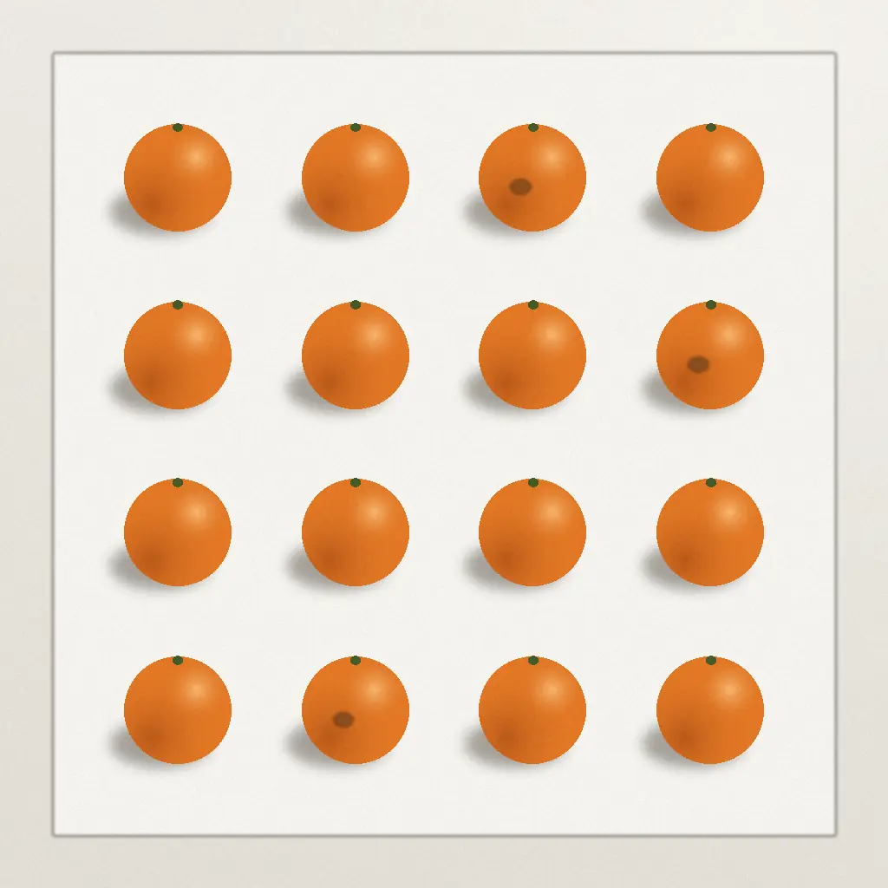

014つの段階
小さく試してから、
続けるかを決める。
-
1
サンプルを集めるお店・工場
良いものと、外したいものを合わせて100個ほど
-
2
撮影ミルメ
撮影台を持ち込み、1つずつ撮って、検品係と基準を決める
-
3
試験運用一緒に
作業台の端に装置を置き、検品係と並べて使う
-
4
本番お店・工場が決める
試験運用の記録を見て、続けるかどうかを決める
02用意するもの
いつもの作業台の、
端を少し借ります。
装置は、検品係の作業の場所と並べて置きます。お店・工場で用意するのは、次の3つです。

- サンプル 100個ほど良いものと、外したいものを合わせて。撮影と基準づくりに使います
- 作業台の端 幅60cm装置と仕分けのかごを置く場所
- コンセント 1口装置の電源
03費用
含むものと、
追加の費用。
| 項目 | 含む範囲 | 費用（税込） |
|---|---|---|
| 試験運用 | 1か月・1品目・装置の貸し出し込み | 55,000円 |
| 本番の月額 | 1品目・装置1台 | 22,000円〜 |
| 品目を増やす | 1品目ごと | 11,000円 |
- 含むもの
- 試験運用は、1品目の判定と装置の1か月の貸し出し。本番の月額は、1品目・装置1台。
- 含まないもの
- 品目を増やすとき、装置を増やすとき、片道50kmを超える出張。
- 続けない場合
- 試験運用のあとに、続けない選択もできます。
撮影（半日〜1日）が試験運用に含まれるか、装置の追加と出張の金額は【要確認】。表示は見本用の架空価格です。
04相談の申し込み
見分けたいものを、
一行で送る。
- 1フォームを送る
- 2日時の候補を、2営業日以内に返信
- 3オンラインで、30分相談する
入力した内容の扱い
- 使う目的：相談の日時の連絡と、相談の準備にだけ使います。
- 保存の期間と、ほかへ渡さないことの定めは【要確認】。
次に読む
トップ：しくみと、最後に人が決める考え方